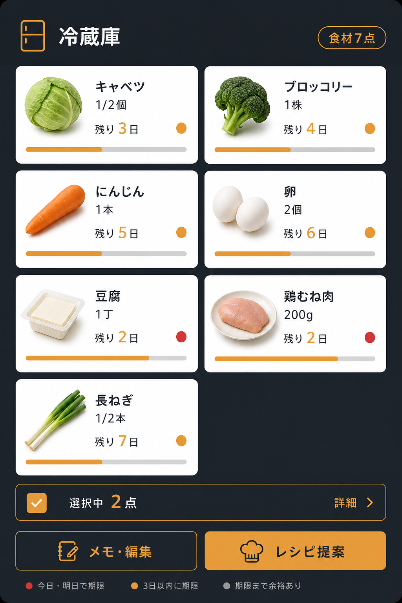
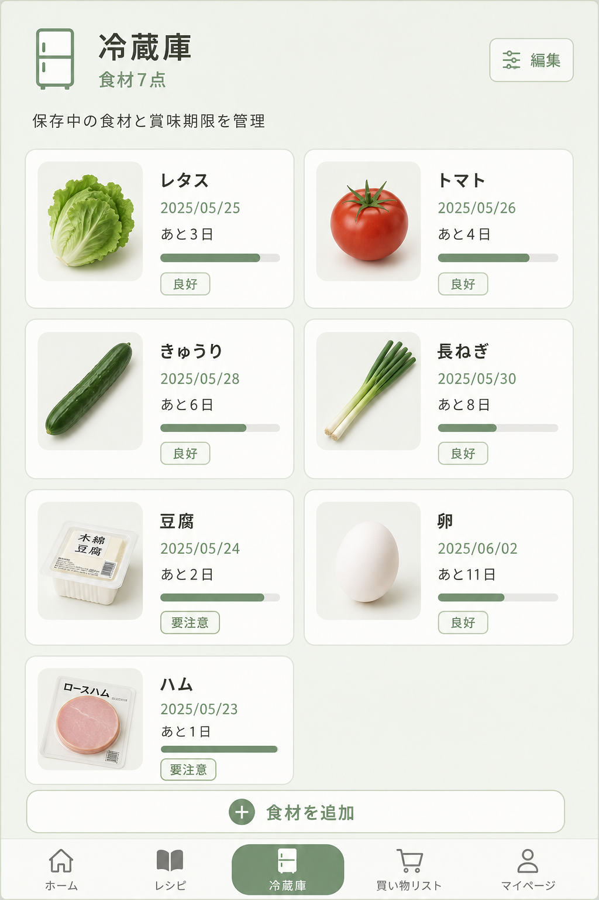
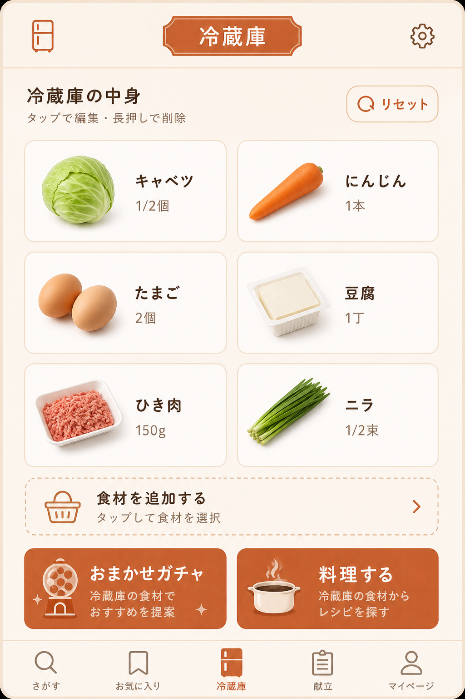
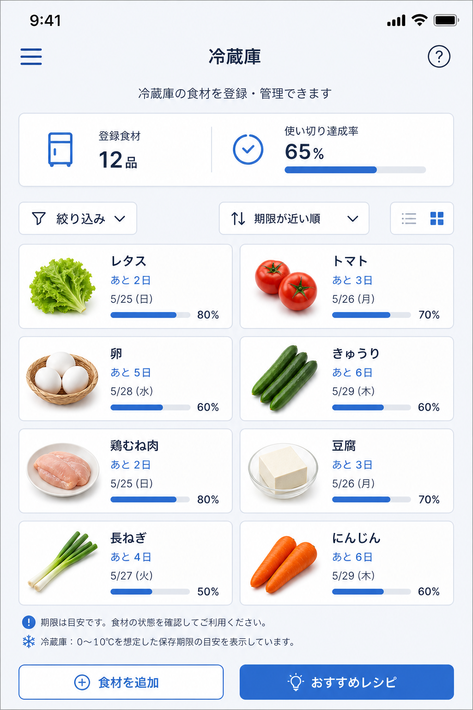

D1 マットスチール 現在
明るいグレー + ティール。静かなワークステーション。

UI 構造は現在の D1 と同じ。アクセントカラーと背景トーンのみ変更。
open-gallery.bat をダブルクリックしてください（ローカルサーバー経由で開きます）。
明るいグレー + ティール。静かなワークステーション。
ダークモード + 暖色アンバー。夜のキッチン向け。

セージグリーン。自然・オーガニックな印象。

クリーム + テラコッタ。温かみのある家庭料理感。

クールブルー。すっきり pro なキッチンアプリ。
